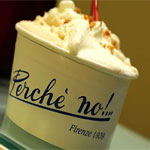
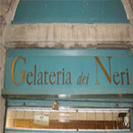

The world famous desert, snack, or pick me up. Gelato is famous for its rich taste and different flavors. The varities are endless. Some of the best gelato places in Florence are....
Gelateria Santa Trinita |
Perche No |
Gelateria dei Neri |
 |
 |  |